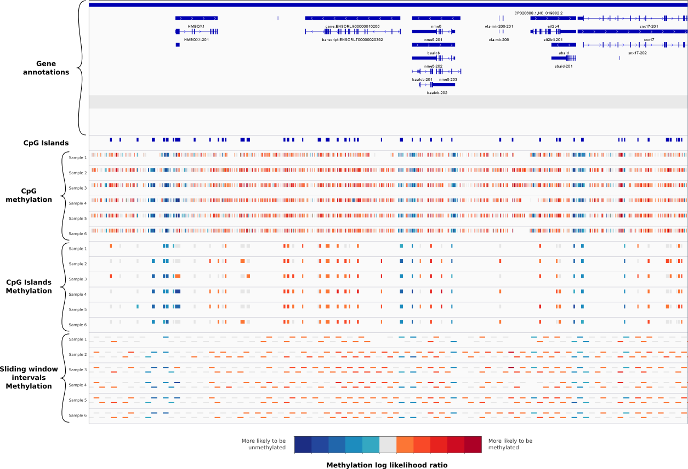

Interval_Aggregate usage
Bin the output of pycoMeth CpG_Aggregate in genomic intervals, using either an annotation file containing interval or a sliding window.
Example usage
Input files
pycoMeth CpG_Aggregate output file
pycoMeth CpG_Aggregate tsv output file (not the bed output).
Reference FASTA file
FASTA reference file used for read alignment and Nanopolish. This file is required and used to sort the CpG sites by coordinates
BED file containing intervals
Optional sorted and BED file containing non-overlapping intervals to bin CpG data into. If this file is not provided, then the program use a sliding customizable window to bin data along the entire genome.
Output files
Tabulated TSV file
This tabulated file contains the following fields:
- chromosome / start / end : Genomic coordinates of the interval containing CpGs
- num_motifs: Number of CpG positions/cluster found in the interval
- median_llr: Median of all log likelihood ratios (llr) for the interval
- llr_list: List of median llr values of all CpG positions/cluster found in the interval
- pos_list: List of genomic coordinates of the center of all CpG positions/cluster found. The order matches values in llr_list
BED file
Standard genomic BED9 format including an RGB color field. The score correspond to the median log likelihood ratio. The file is already sorted by coordinates and can be rendered with a genome browser such as IGV
The sites are color-coded as follow:
- Median log likelihood ratio higher than 2 (Methylated): Colorscale from orange (llr = 2) to deep red (llr >=6)
- Median log likelihood ratio lower than 2 (Unmethylated): Colorscale from green (llr = -2) to deep blue (llr <= -6)
- Grey: Median log likelihood ration between -2 and 2 (ambiguous methylation status)
Here is an example of multiple methylation bed files rendered with IGV
